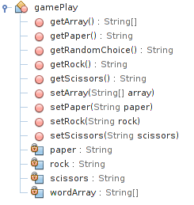
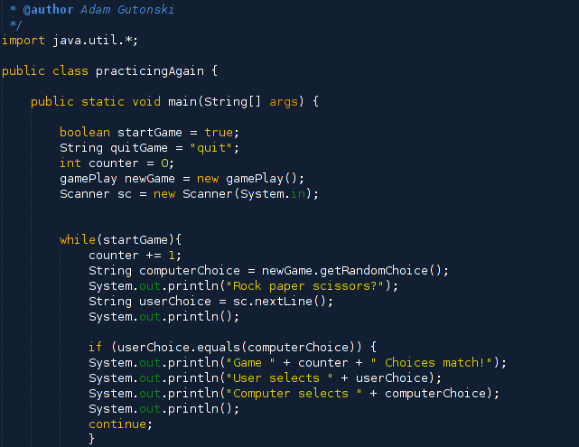
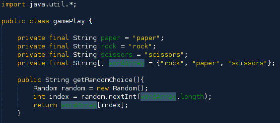
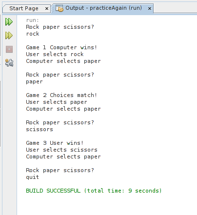

Home
homePython
autorenewGitHub
autorenewThis was an attempt at using Java to recreate the rock-paper-scissors script that I worked out when first learning Python. Since I have been ingrained in the Pythonic landscape, it was a fun challenge to dive back into a lower level language like Java, (even though some don't consider it low level enough). It also gave me opportunity to use NetBeans more. I do use it now to edit HTML and CSS documents, it was my first love as an IDE. The program consists of two classes, gamePlay which contains the game logic, and practicingAgain which runs the main method. The gamePlay class contains generator methods for the final private string variables for "rock, paper, scissor". We instatiate a gamePlay object in the practicingAgain class, as well as a boolean variable, a "quit" string variable, and Scanner object.
The program enters a while loop, controlled via the startGame boolean. In the loop a counter variable adds 1 to keep track of gameplay count. The gamePlay object newGame calls on the getRandomChoice() method to generate the computer choice of "rock, paper, scissors". The if blocks in the while loop then compare the user input form the scanner to the pseudo-random selection generated by this method (returns a string of "rock, paper, scissors", string comparisons like in the Python script.) Here is the opening of the gamePlay class that shows the class variables and getRandomChoice() method.
You can see that the class variables are private final so that they can not be altered after instatiating a gamePlay object. The class also imports the java.util package in order to generate a Random object in the getRandomChoice() method. The random object allows for a pseudorandom selection from the String[] array variable. This method is called on in main, and the random selection of "rock, paper, scissors" is stored in the computerChoice variable.
I am enjoying my return to Java. Although Python has been fun, and access to the web and APIs is almost magic, Java makes me feel like a "programmer". The object oriented approach to Java is one that I understand. I have not delved into Python OOP but for now, Java is wonderful. I have just jumped back into the TCVCOG CodeConnect project and honing my java chops will be essential. Below is the program output from the NetBeans IDE, showing the user option to enter "quit" and exit the program:
I would like to find a cleaner way to make the string comparisons between comp_select and user_select. I am reading again about working with file in Java, and I would like to write the results to file eventually. Like I mentioned with the Python version of rock, paper, scissors, I would like to provide a GUI for the user to interact with. This will give me a chance to learn about Java FX and (I hope...) the abandonment of javax.swing...
arrow_upwardBack to top